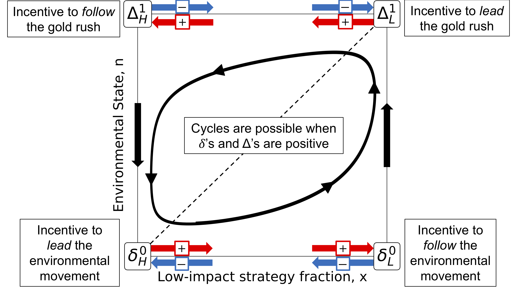
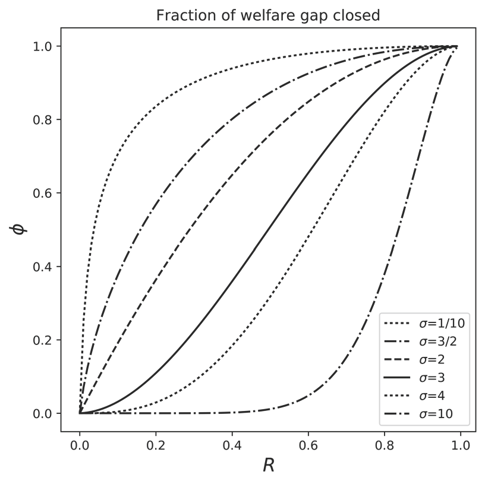
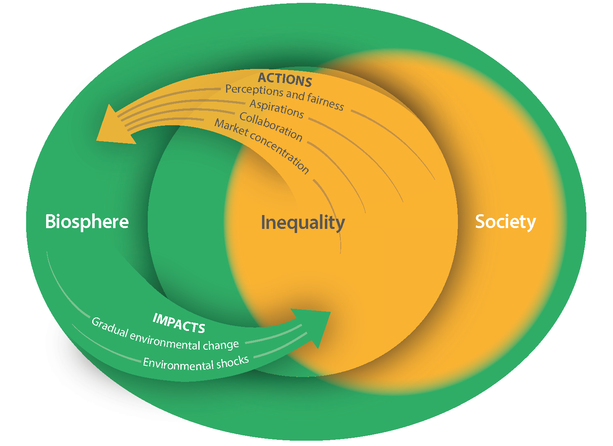
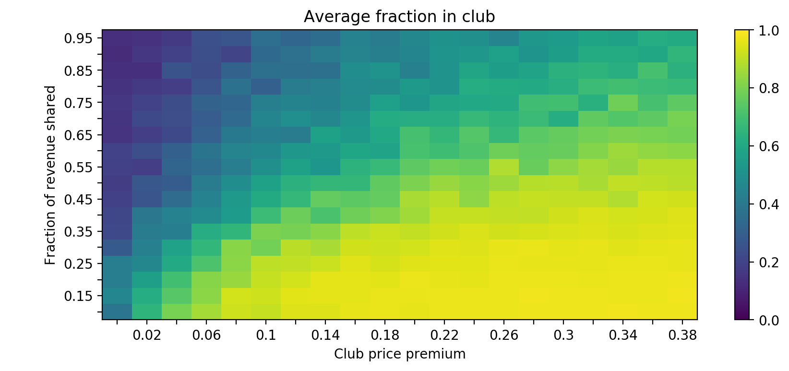
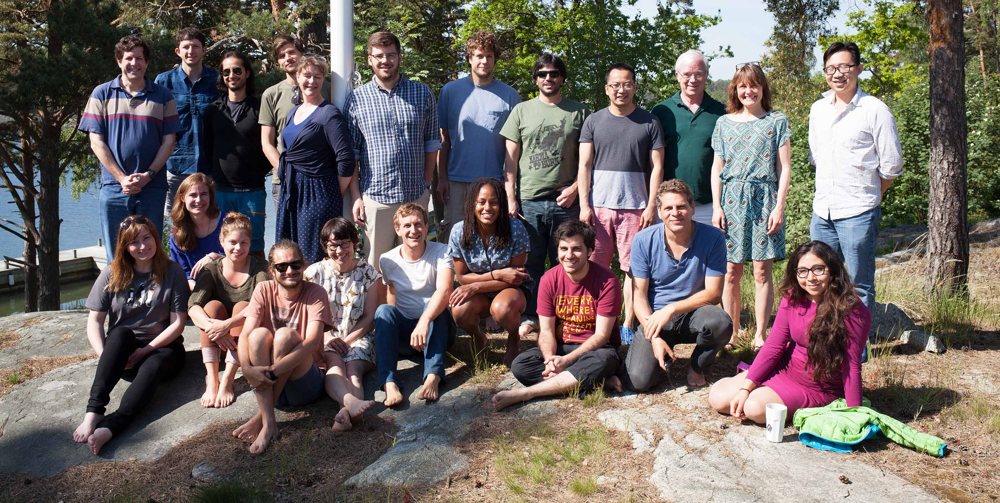
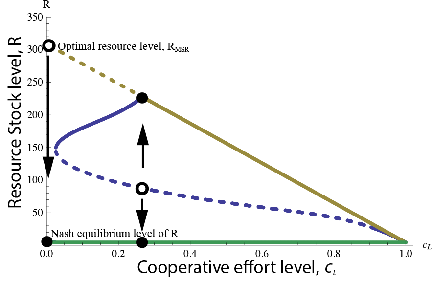

Andrew R. Tilman
Postdoctoral Scholar Ecology, Evolution, Economics University of Pennsylvania 

News
Evolutionary games with environmental feedbacks
In biological, social-ecological, and psychological systems, the strategies of individual agents often alter the environment. In turn, the environment typically alters the payoffs of strategic interactions. We analyze the consequences of these feedbacks and show that such 'eco-evolutionary games' arise in many settings, and can be understood in terms of a few intuitive parameters.
Localized prosocial preferences, public goods and common-pool resources
Prosocial preferences and other-regarding behaviors more generally are a fact of life. Yet, the degree to which these preferences can play a role in resolving problems of the Commons is not well understood. We develop a framework for modeling the impact of prosociality on public goods provision and social welfare when individuals care more about members of their own group than members of other groups. We find that prosociality is most effective at moving individuals toward optimal public goods provision when there is low substitutability between the public good and its private alternatives. This finding sheds light on systems in which prosociality can be an effective mechanism for the resolution of public goods problems.
Inequality and the Biosphere
This paper was the product of the Beijer Young Scholars group workshops and led by Maike Hamann. We employed a social-ecological systems framework and identified pathways that link inequality and the biosphere. Our review finds that most research has focused only on one-directional linkages between inequality and the biosphere. We highlight examples where bi-directional and cross-scale linkages are present. Such systems call for approaches that consider the complex feedbacks and dynamics of inequality that are present at the nexus of society and the biosphere.
Revenue-sharing clubs provide economic insurance and incentives for sustainability in common-pool resource systems
Common-pool resource users face risk in the form of day-to-day and season-to-season variability in their harvest. In this paper, we develop theoretical and agent-based models of revenue-sharing clubs. In such a club, members share a fraction of their revenue with club members. This mitigates the risk of harvest variability, but also creates incentives for harvesters to reduce their overall harvest effort. This effort reduction has the side effect of improving management of the resource by reducing overexploitation. Our agent-based model shows that these voluntary revenue-sharing clubs can emerge and improve resource management when a resource is highly variable, with low correlation among harvesters. This occurs in patchy resources, but not seasonally variable resources.
New Beijer Young Scholars webpage
The BYS2 group just launched a new webpage. With support from the Beijer Institute of Ecological Economics we have had three workshops where we collaborated on a paper addressing inequality and the biosphere. Going forward we are actively pursuing collaborative research projects as a group and this website will track our progress.
Maintaining cooperation in social-ecological systems: Effective bottom-up management often requires sub-optimal resource use
When policies for maintaining a common-pool resource are implemented from the bottom up, the strength of the punishment for violating resource use norms can be limited. In this paper, we explore the management implications of limited enforcement of norms and find a counter-intuitive result. When a common-pool resource is maintained via cooperation and norm enforcement, aiming for traditional targets of optimal management, such as maximum sustainable yield or profit, can backfire. Often harvest policies that are sub-optimal in the short run are needed to ensure the long term sustainability of bottom-up management.